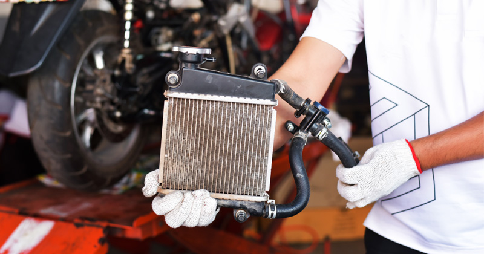

ระบบระบายความร้อนด้วยน้ำ
หลักการทำงานของระบบระบายความร้อนด้วยน้ำ
1.การดูดซับความร้อน :
น้ำหล่อเย็นจะไหลเวียนผ่านช่องทางภายในเครื่องยนต์ เพื่อดูดซับความร้อนออกจากส่วนประกอบที่ร้อนจัด
2.การถ่ายเทความร้อน :
น้ำหล่อเย็นที่ร้อนแล้ว จะถูกส่งต่อไปยังหม้อน้ำ (Radiator) ซึ่งมีลักษณะเป็นรังผึ้ง
3.การระบายความร้อนสู่ภายนอก :
อากาศที่ไหลผ่านครีบรังผึ้งของหม้อน้ำ จะรับความร้อนจากน้ำหล่อเย็น ทำให้น้ำเย็นลง
4.การหมุนเวียนน้ำ :
ปั๊มน้ำ (Water Pump) จะทำหน้าที่หมุนเวียนน้ำหล่อเย็นกลับเข้าสู่เครื่องยนต์อีกครั้ง
เพื่อทำความเย็นอย่างต่อเนื่อง
ข้อดีของการระบายความร้อนด้วยน้ำ
1.เพิ่มสมรรถนะ :
ช่วยให้เครื่องยนต์ทำงานได้เต็มประสิทธิภาพ และรักษาอุณหภูมิให้คงที่
2.ยืดอายุการใช้งาน :
ลดความร้อนสะสม ทำให้อุปกรณ์ภายในเครื่องยนต์ เช่น ลูกสูบ แหวน มีอายุการใช้งานยาวนานขึ้น
3.ประหยัดเชื้อเพลิง :
การควบคุมอุณหภูมิที่ดี ช่วยให้เครื่องยนต์ทำงานได้อย่างมีประสิทธิภาพมากขึ้น
4.ลดมลพิษ :
เครื่องยนต์ที่ทำงานในอุณหภูมิเหมาะสม ช่วยลดการปล่อยไอเสียที่เป็นอันตราย
5.เหมาะสมกับการใช้งาน :
ทนทานต่อการใช้งานในสภาพแวดล้อมที่หลากหลาย ทั้งในเมืองและนอกเส้นทาง
การดูแลรักษาระบบระบายความร้อนด้วยน้ำ
1.ตรวจเช็คน้ำหล่อเย็น:
ตรวจดูระดับน้ำหล่อเย็นในหม้อน้ำและหม้อพักน้ำอยู่เสมอ และเติมน้ำหล่อเย็นคุณภาพดี (ไม่ใช่แค่น้ำเปล่า)
หากระดับลดลง
2.ตรวจหารอยรั่ว:
หมั่นตรวจสอบท่อยางหม้อน้ำ ครีบหม้อน้ำ และปั๊มน้ำ ว่ามีรอยรั่วซึมหรือไม่
3.ทำความสะอาดหม้อน้ำ:
ทำความสะอาดครีบหม้อน้ำไม่ให้มีสิ่งสกปรกหรือโคลนอุดตัน เพื่อให้ลมระบายความร้อนผ่านได้สะดวก
4.เปลี่ยนน้ำหล่อเย็น:
ควรเปลี่ยนน้ำหล่อเย็นตามระยะเวลาที่กำหนด หรือทุกๆ 1-2 ปี เพื่อรักษาประสิทธิภาพของระบบ